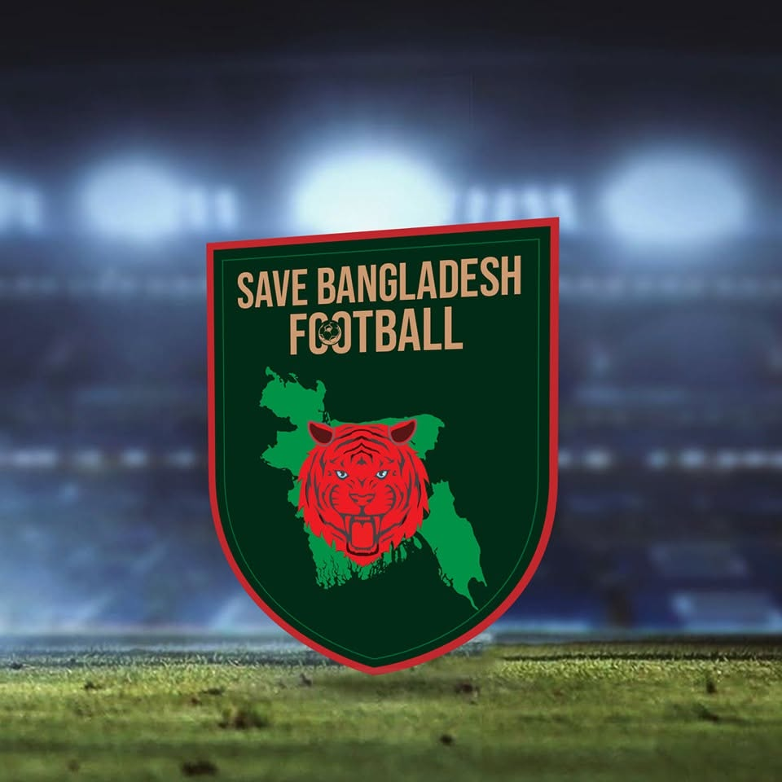

Save Bangladesh Football
Founder & Administrator | 2020–Present
Welcome to my dedicated page showcasing my leadership, digital media management, and community development experience through Save Bangladesh Football.

Founder & Administrator | 2020–Present
Welcome to my dedicated page showcasing my leadership, digital media management, and community development experience through Save Bangladesh Football.